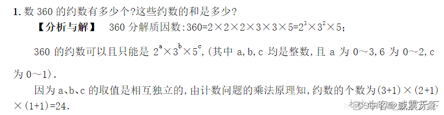

summary
1.输入输出控制
- 大量输入输出导致超时，可以试试把 cin 和 cout 换成 scanf 和 printf，如果涉及到 string 类可以补加下面的语句使 cin 和 cout 的速度与 scanf 和 printf 类似
1 | |
- 读入无停止标识符的字符串
1 | |
- 逐字符读入带空格的字符串
1 | |
- 使用 getchar() 的时候要注意上次 scanf() 读剩下的 \n 和每行结束后的 \n
- 保留小数
1 | |
- vector 一边删除一边遍历
1 | |
2.字符串控制
- 分词时如果要求为非空格和字母，将所有非空格的内容合并为一个空格：
1 | |
- 字符串转数字：stoi/stod/atof ，1069 The Black Hole of Numbers 这道题中是要求21能转成 0021 和 2100，这类型需要注意不能用to_string 和 stoi 的转换（只能转成 21 和 12）
- 大小写转换：
1 | |
- 判断字符类型：isalpha、isalnum、isdigit、islower、isupper
- 在字符串中寻找特定字符或字符串的起始下标，可以用 find 和 npos
1 | |
- 下面是对字母循环平移 pos 位，利用了 a % m = ( a + m ) % m
1 | |
- 1093 Count PAT’s，下面的第一个是暴力解法，超时拿不到另一半分，另一个是计数解法AC，当时以测试案例和PAATAAT不断调整写出的，主要想法是算每个A后面有几个T，就能得到AT的个数（acnt），然后累积每个字母后面AT的个数（asum），只要是P就可以组成PAT
1 | |
3.排序
- map 根据 second 排序，注意如果cmp函数有歧义，sort 函数会抛出数组越界的错误
1 | |
- 按照输入顺序输出记录的重复字符下标，设置 rank
1 | |
4.数字处理类
- 涉及数字每位上的处理，先观察一下能否简化，比如 【abc和bcc是两个三位数，且有abc+bcc=532，所有这类数】，abc+bcc=100a+110b+12c=532即可，不需要把所有数都放上去再提取每位的数字再转换
- [编程题]进制转换 涉及到了字符串模拟数字和大数除法，下面的数字模拟是关键，取模的时候可以只用字符串数字的最后一位模2，结果与整个字符串数字模2等价，大数加减乘除模拟 中除法较难，下面的 divide 在除数较简单时可以代替，其他操作很简单
1 | |
- 辗转相除法求最大公约数，两数的最小公倍数是它们的乘积除以最大公约数，最简真分数个数
1 | |
- 1081 Rational Sum，测试点4错误，最后参考PAT甲级1081 Rational Sum (20分)记录（学习的点：scanf 控制格式化输入x.x，%lld），下面是自己的做法
1 | |
- 第k个素数，可以判断素数，也可以素数筛法，素数筛也可以辅助计算质因数分解，[编程题]整除问题 整除问题【质因子分解】
1 | |
- 计算约数的个数，可以直接用质因数分解计算，也可以除法试

1 | |
- 利用二进制表示快速幂，矩阵快速幂将 answer 初始化为单位阵，数字快速幂初始化为1
1 | |
5.模拟输出类
- 输出时记得考虑实际情况（常常在边界出问题），如买东西不能买负数个
- 两个 int 相除得到的一定是 int，可能会丢失小数部分导致出错
- 输出给定图形的时候如果规律顺序按照从上到下，从左到右，与输出顺序一致时，可以直接输出，比如【按行输出梯形】，否则可以先构造图形再输出，比如【构造螺旋】
- 构造图形的时候以找好锚定点即可，以锚定点开始进行±操作，比如方形的输出就可以抓住左上角顶点和右下角顶点的坐标作为锚定点
1 | |
Repater 抓住图案的端点值和边长即可，注意其他地方要填充空格，不能没有东西，之前直接 clear 是不行的，下面以 bb 新创建一个空格模板成功AC（搞到凌晨3点TvT
1 | |
- 向文档写入
1 | |
- 计算日期注意闰年判断和天数提前保存，日期差值，计算星期几需要计算与1年1月1日（星期一）的差值，再对7求余
1 | |
- 【最详细的分析】1061 Dating (20 分) 注意隐含条件
- [编程题]路径打印，格式错误，未解之谜（气死了
1 | |
- [编程题]约瑟夫问题II，涉及到大量删除操作用链表解决更好，下面要注意的是 vector 边删除边遍历的操作，如果 for 里也 it++ 会跳过某些元素
1 | |
- 1046 Shortest Distance，第一次做简单相加会超时，第二次做用二维数组存储累积距离会超限，可以直接用一维数组解决，只记录起点到其他点的累积距离
1 | |
6.其他
- 万能头文件 #include <bits/stdc++.h>
- 关于位运算的一些技巧
- 贪心思想
- 代理服务器，实际是模拟页面置换算法OPT
1 | |
- 今年暑假不AC，贪心思想，按照最先结束选择区间
- 贪心算法题目
- Catch That Cow，Find The Multiple ，[编程题]玛雅人的密码 宽度优先搜索
- A Knight’s Journey，square 深度优先搜索
- 1041 Be Unique，一个vector记录顺序，一个map统计数字，即可既根据输入顺序也根据统计情况做判断
- 1040 Longest Symmetric String，自己做的只看到了例子的那种情况，对称分两种对称情况，【PAT甲级 - C++题解】1040 Longest Symmetric String
1 | |
1 | |
- 1056 Mice and Rice 遍历模拟比赛，需要原地修改成员变量的可以用指针vector，解答